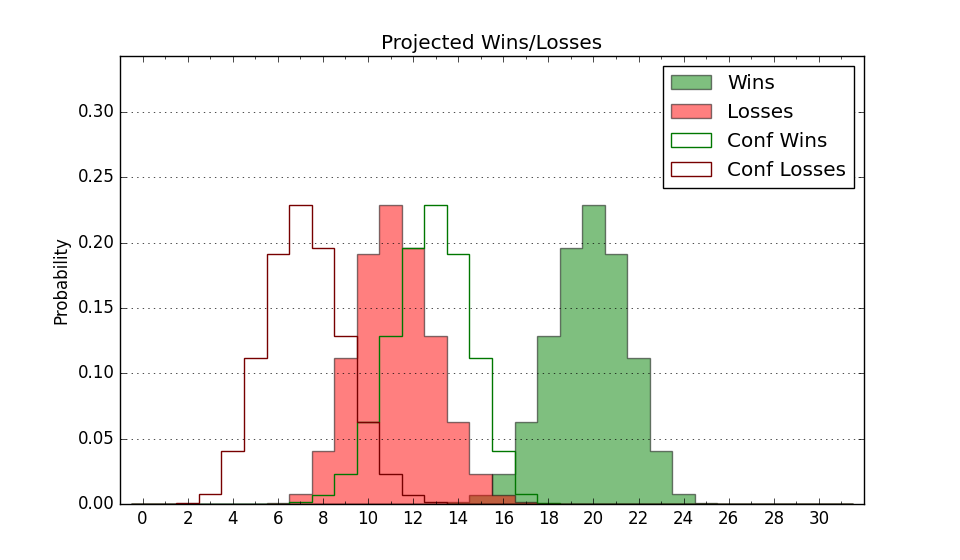

| Home | Game Probabilities | Conferences | Preseason Predictions | Odds Charts | NCAA Tournament |
| City: | Pittsburgh, Pennsylvania | |
| Conference: | ACC (3rd)
| |
| Record: | 4-2 (Conf) 11-6 (Overall) | |
| Ratings: | Comp.: 11.6 (73rd) Net: 12.3 (69th) Off: 108.0 (62nd) Def: 95.6 (87th) SoR: 45.4 (61st) |
| Remaining | ||||||
|---|---|---|---|---|---|---|
| Date | Opponent | Win Prob | Pred. | |||
| 1/14 | @ Georgia Tech (120) | 50.5% | W 70-69 | |||
| 1/18 | @ Louisville (297) | 84.0% | W 75-63 | |||
| 1/21 | Florida St. (177) | 86.0% | W 80-67 | |||
| 1/25 | Wake Forest (96) | 73.7% | W 78-71 | |||
| 1/28 | Miami FL (45) | 55.0% | W 77-75 | |||
| 2/1 | @ North Carolina (21) | 19.6% | L 70-80 | |||
| 2/7 | Louisville (297) | 94.7% | W 79-59 | |||
| 2/11 | @ Florida St. (177) | 64.3% | W 75-71 | |||
| 2/14 | Boston College (203) | 88.4% | W 74-60 | |||
| 2/18 | @ Virginia Tech (58) | 31.0% | L 68-73 | |||
| 2/21 | Georgia Tech (120) | 77.7% | W 74-65 | |||
| 2/25 | Syracuse (97) | 74.2% | W 75-68 | |||
| 3/1 | @ Notre Dame (149) | 57.3% | W 70-69 | |||
| 3/4 | @ Miami FL (45) | 26.4% | L 72-80 | |||
| Previous | Game Score | |||||
| Date | Opponent | Win Prob | Result | Off | Def | Net |
| 11/7 | Tennessee Martin (250) | 92.4% | W 80-58 | -14.1 | 16.9 | 2.9 |
| 11/11 | West Virginia (32) | 49.9% | L 56-81 | -16.9 | -13.2 | -30.1 |
| 11/16 | (N) Michigan (50) | 42.7% | L 60-91 | -10.8 | -29.0 | -39.8 |
| 11/17 | (N) VCU (98) | 60.9% | L 67-71 | -13.5 | 0.4 | -13.2 |
| 11/20 | Alabama St. (348) | 97.6% | W 73-54 | -14.4 | 4.0 | -10.5 |
| 11/22 | Fairleigh Dickinson (320) | 95.9% | W 83-61 | -5.3 | 6.2 | 0.8 |
| 11/25 | William & Mary (287) | 94.1% | W 80-64 | 5.2 | -5.1 | 0.1 |
| 11/28 | @Northwestern (47) | 28.1% | W 87-58 | 47.7 | 11.9 | 59.6 |
| 12/2 | @North Carolina St. (38) | 24.4% | W 68-60 | 0.9 | 20.5 | 21.4 |
| 12/7 | @Vanderbilt (91) | 43.4% | L 74-75 | 6.5 | -6.9 | -0.3 |
| 12/10 | Sacred Heart (339) | 96.8% | W 91-66 | 2.6 | -1.9 | 0.7 |
| 12/17 | North Florida (282) | 93.8% | W 82-56 | 3.9 | 8.1 | 12.0 |
| 12/20 | @Syracuse (97) | 45.7% | W 84-82 | 13.3 | -4.8 | 8.5 |
| 12/30 | North Carolina (21) | 45.4% | W 76-74 | -6.1 | 7.8 | 1.6 |
| 1/3 | Virginia (11) | 37.1% | W 68-65 | 9.9 | -2.7 | 7.2 |
| 1/7 | Clemson (69) | 64.1% | L 74-75 | 10.5 | -15.4 | -4.9 |
| 1/11 | @Duke (30) | 22.1% | L 69-77 | -5.4 | 4.4 | -1.0 |
| Stats & Trends | |||||
|---|---|---|---|---|---|
| Current | Day | Week | Month | Season | |
| Composite | 11.6 | +0.1 | -0.1 | +2.3 | +6.7 |
| Comp Rank | 73 | +1 | +1 | +9 | +38 |
| Net Efficiency | 12.3 | +0.1 | -0.5 | +1.6 | -- |
| Net Rank | 69 | +1 | +6 | +8 | -- |
| Off Efficiency | 108.0 | +0.1 | +0.2 | +1.6 | -- |
| Off Rank | 62 | +2 | +3 | +26 | -- |
| Def Efficiency | 95.6 | +0.0 | -0.6 | +0.1 | -- |
| Def Rank | 87 | +1 | -8 | +6 | -- |
| SoS Rank | 80 | +1 | +41 | +100 | -- |
| Exp. Wins | 19.8 | +0.0 | -0.9 | +1.9 | +5.6 |
| Exp. Conf Wins | 12.8 | +0.0 | -0.9 | +1.8 | +5.5 |
| Conf Champ Prob | 8.8 | +0.1 | -15.1 | +6.8 | +8.4 |

| Advanced Stats | ||
|---|---|---|
| Stat | Value | Rank |
| Off Eff FG % | 0.534 | 74 |
| Off Ast Ratio | 0.147 | 116 |
| Off ORB% | 0.304 | 91 |
| Off TO Rate | 0.164 | 203 |
| Off FT Ratio | 0.365 | 67 |
| Def Eff FG % | 0.466 | 66 |
| Def Ast Ratio | 0.127 | 99 |
| Def ORB% | 0.271 | 197 |
| Def TO Rate | 0.169 | 129 |
| Def FT Ratio | 0.271 | 85 |